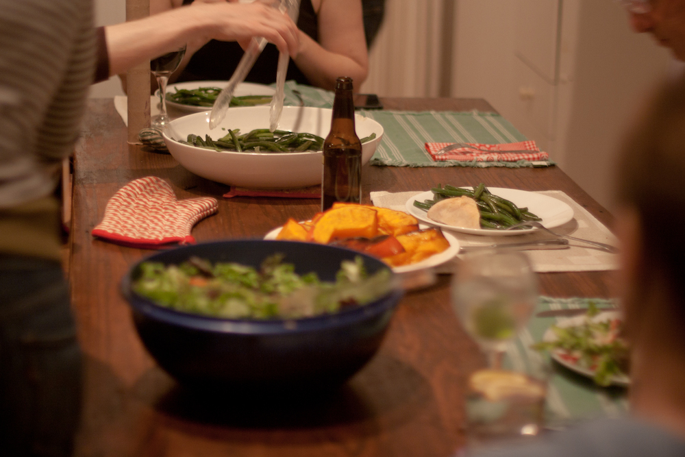
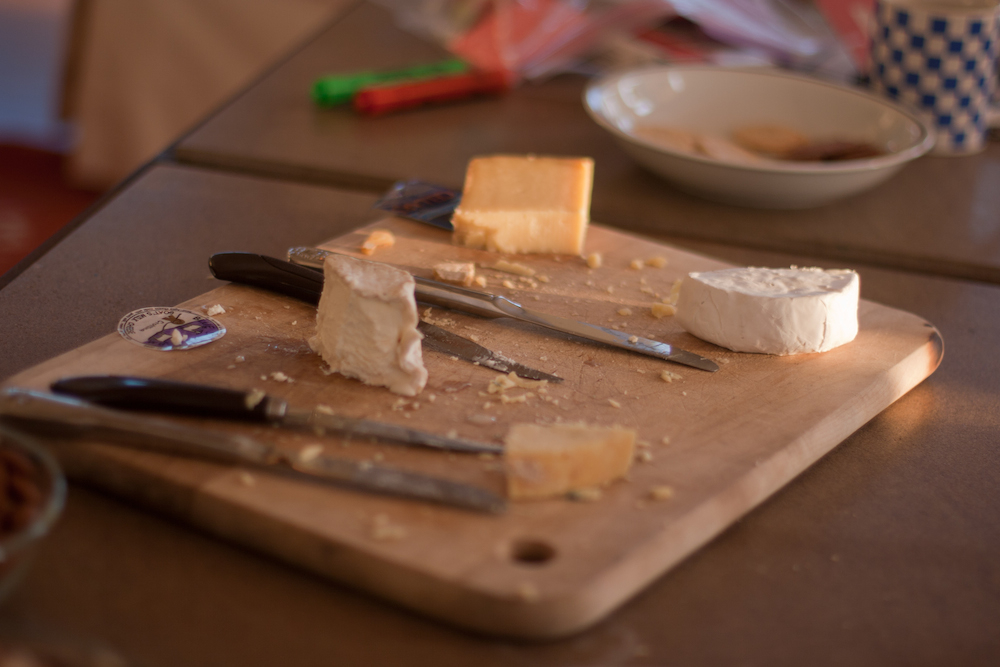

Our crew had a high percentage of people for whom it was important not just to eat, but to eat well. I'm not talking caviar-well, but nice cheeses and fresh vegetables and delicious bread. My partner Aaron and I used to run a bakery and do catering, so we were up to the challenge. Food prep is an area that scares a lot of people, so I'm including enough info here so you could copy this exact menu and be fine for your retreat.

We had a few gluten-free folks in the group, so this menu works around that restriction. We didn't have any vegetarians with us, so if your group does you'll need to revamp a few of these meals.
Despite our careful calculations, we still ended up with too much food. Not comically too much food (well, except in the case of ice cream), but still - too much food. This menu would easily feed 14, and people who are driving home after the retreat are going to have to do their part and take home half-eaten loaves of bread and whatnot. Be warned.
Breakfast
Day 1:
- Fruit crisp w oatmeal topping
- Scrambled eggs
Day 2:
- Waffle Bar
Day 3:
- Scrambled eggs w veggies & cheese
Lunch
Day 1:
- Tomato soup (fresh!)
- Grilled cheese
- Quesadilla (w corn tortilla) for the gluten-free
- Green salad (which was so large we had the leftovers with every subsequent meal)
Day 2:
- We ate out a local restaurant near the bird sanctuary. We called ahead and let them know there was a group coming, and they set up a prix fixe menu (which made for simpler budgeting and ordering).
Dinner
Day 1 ("American Grill"):
- Grilled sausages
- Baked potatos w toppings
- Grilled or sauteed veggies
Day 2 ("Harvest Festival"):
- Roast Chickens x3
- Roast squash x giant
- Green beans
Day 3 ("Taco Party"):
- Tacos w corn tortillas, leftover chicken, black beans, 1 million leftovers
Snacks
- Tortilla chips and fresh pico de gallo
- Dried fruit & nuts
- Fancy cheeses
- Fresh fruit (apples, because New England in October)

Dessert
Let's just say that we bought way too much dessert. Turns out we were not really a dessert crew - it actually felt really good for us all to eat more like we do at home and not overindulge. So maybe a set of s'more makings (it is camp, after all) and some ice cream, and you're good to go.